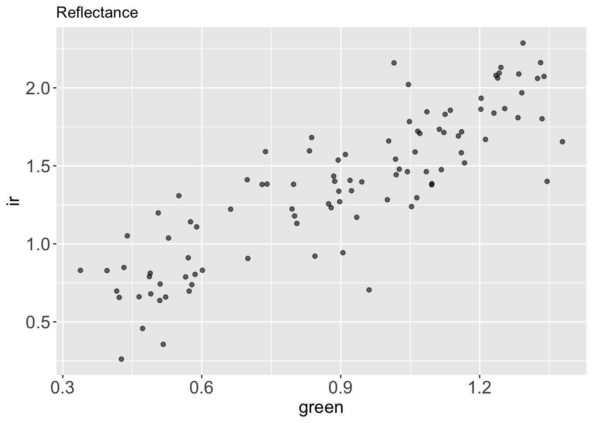
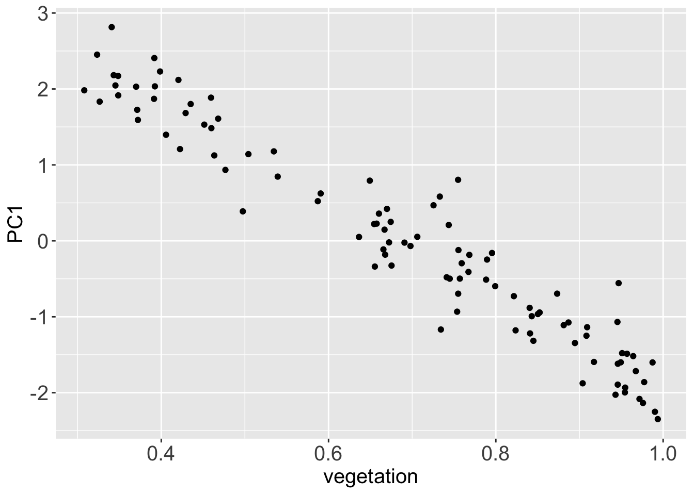
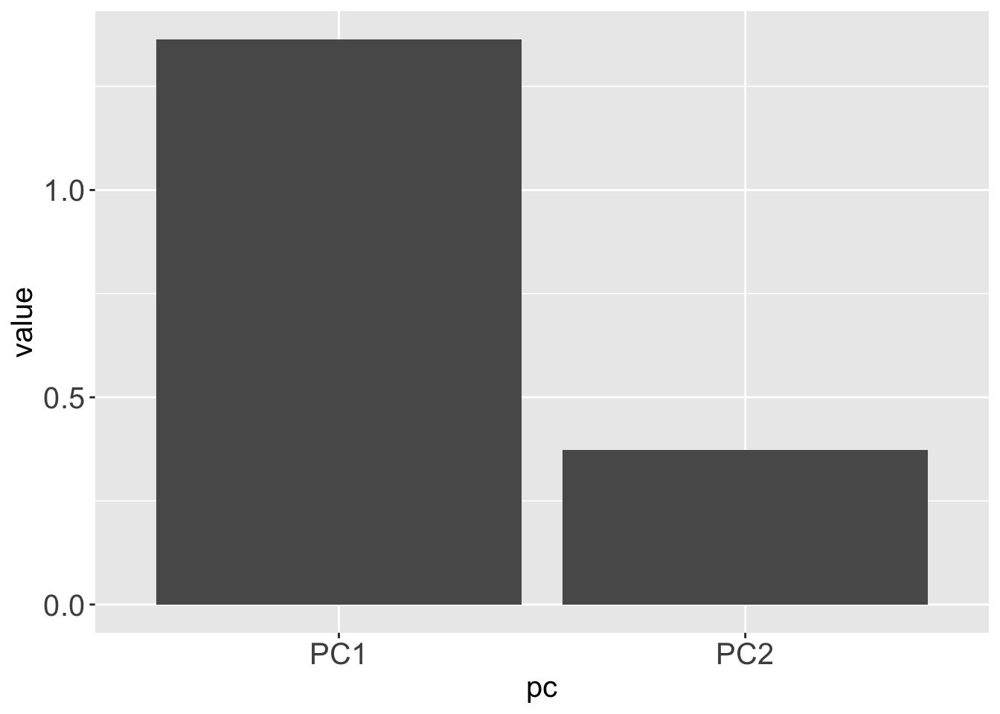

library(dplyr)
library(readr)
library(magrittr)
library(tidyr)
library(palmerpenguins)
library(tibble)
library(ggplot2)
library(readr)
library(here)
library(stringr)
library(broom)
theme_update(axis.title = element_text(size = 15),
axis.text = element_text(size = 15),
strip.text = element_text(size = 15))Unsupervised Learning - Explore your Data with Clustering and PCA
üöß Work in Progress ‚ö†Ô∏è
1 Introduction to Unsupervised Learning
1.1 References first
As always, references first, and my favorite references for unsupervised learning are:
- Introduction to Statistical Learning, chapter 12.
- Introduction to Data Science: chapter 34 and part of chapter 33.
- Chapter 16 of Tidy Modeling with R.
- A tutorial on Principal Component Analysis [PDF] by Jonathon Shlens.
There’s an additional reference that I really like, that explains Principal Components visually. Check it out!
1.2 Ok, but what is Unsupervised Learning?
Unsupervised learning might seem strange. To understand what “Unsupervised” means, let’s first take a step back and remember what we have learned about “supervised learning in the previous chapter. Then define what makes an”Unsupervised” learning process by comparison.
1.2.1 A quick recap about supervised learning
When we fit a supervised learning model, such as a linear regression model, we are looking for a function that is able to guess an outcome \(Y\) starting from the value of a series of predictors \(X_1, X_2, ..., X_n\); both the outcome variable \(Y\) and the predictor variables \(X_1, X_2, ..., X_n\) are already part of our data, before fit the model. When we do fit the model, we estimate parameters for the function that connects the outcome and the predictor. In the linear regression example, those parameters would be the slope and intercept of the regression line.
Once we have estimated those parameters, then we can then use statistical indicators to investigate if the model that we have selected and the parameters that we have estimated are convincingly explaining how \(Y\) responds to variations in the predictors \(X\). If they don’t, the model that we have selected might be inappropriate for capturing how the outcome responds to the predictors; or it might be that the outcome is not responding to changes in the predictor variables at all.
1.2.2 Let’s compare it to unsupervised learning
In supervised learning instead, we don’t have an outcome variable \(Y\), or we don’t care to look at it, thus the word “unsupervised”. We look only at a series of predictors \(X_1, X_2, ... X_n\), and we ask to ourselves: is there any interesting pattern in the predictor? Do they co-variate in interesting ways? Can we group them together in an insightful way judging from their covariance patterns?
Since we don’t have an outcome variable \(Y\) that we could use to test the performance of our model, there is no real way to tell if our unsupervised model is “good” or “bad”; if it is “successful” or not. The model will probably show us some pattern in the data; it’s up to us to further investigate those patterns to understand if they are useful and insightful, or not.
1.2.3 Examples of unsupervised learning methods
The unsupervised learning methods that you have probably already heard about are :
- Clustering.
- Principal Component Analysis.
You could also have heard the term dimension reduction as a synonym of unsupervised learning. This is a great term to describe it, since we often use those methods to reduce the dimensions (read: number of variables i.e. number of columns), of a complex multivariate dataset to a smaller, informative and more manageable subset or combination of them.
1.2.4 Examples of unsupervised learning questions
Thus, whem we apply unsupervised learning, we look at predictors variables, without an outcome. We might ask In which cases would such method be useful?
For example, we are measuring a range of pollutants in many samples of soil from selected areas around the world. In this setup, the pollutants are the variable/predictors of the data and each sample of soil is an observation. We want to know if there are groups of soils with similar combination of pollutants, to investigate their history, and their effects.
Or, similarly, we could use transcriptomics to measure gene expression in many samples of different tumors tissues. We want to look at those data to seek for patterns and understand if group of tumors have similar gene expression pattern. Again, we could use unsupervised learning to search for those patterns.
Coming back to the rice panicles dataset: The group that published the paper have measured many variables (predictors): rachis_length, primary_branch_length, primary_branch_number, secondary_branch_length, internode_length and so on. We might be interested to know if there are groups of rice accessions (observations) that share similar panicle features. For example, maybe there is an unexpected group of rice varieties with long secondary branches, short rachis, and few primary branches, or vice-versa.
Maybe we don’t know which pattern we are looking for, we just want to know if there are groups of rice varieties with similar panicle features, so that later we can investigate those features. If our data are multivariate, and they often are, it is unlikely that we will manage to explore all the combination of features visually, so we can seek for pattern in the data with unsupervised learning, such as PCA or clustering.
We will start with a dummy dataset, and later we will move to real life datasets suche as the rice panicles to demonstrate how to run and interpret PCA and hierarchical clustering in R.
2 Setup
2.1 R packages
Load the R packages needed to cover the examples in this chapter.
3 Principal Component Analysis
The Principal Component Analysis, abbreviated to PCA, is one of the most used Unsupervised Learning Techniques.
When we run a Principal Component Analysis (PCA), we take the variables in our dataset and we use them to estimate new variables that are a linear combination of the original ones. The new variable will be orthogonal, thus uncorrelated to each others, and are called the principal components.
In detail, the transformation that we perform to estimate the principal components, are rotations of the original axis of the data, in a way that the first principal components corresponds to the main axis of variation of the original data, the second component corresponds to the second main axis of variation, orthogonal to the first one, and so on until we have as many components as are the variable of the original dataset.
Given the hypothesis that the main axes of variation collect the signal available in the dataset, and that the axes of minor variation collect only noise, the rotations (loadings) and the values projected on the principal components (scores) can provide us with valuable insights about pattern that were hidden in the original dataset, and about how many dimension we need to encode those pattern.
Since the principal component are the axis of variation of the dataset, orderd by how much variance they explain, the first principal components store the main signal in the data, and the last store the noise.
Let’s go through a naive example before running a PCA on the rice dataset.
3.1 A Naive Example on Synthetic Data
We generally use PCA to make sense of multidimensional (i.e. multivariate) datasets.
Instead, for demonstration sake, before dealing with a complex dataset, let’s start from a simple example with data in 2 dimension. We will use this data to demostrate of how the PCA works and how to interpret it.
Let’s draw an example from satellite imaging of cultivated fields. While plant leaves absorb blue and red light, they reflect green and IR light, Thus, satellite images of those fields will show strong reflection bands in both green and IR wavelengths.
Let’s imagine that we have collected a dataset in two dimensions, storing:
- 2 variables: green and IR reflectance,
- 2000 observations, that cover a rectangular grid over a vegetated area.
Both variables will basically be a function of the vegetation density, plus some “noise” coming from atmospheric disturbance, different plant composition or else. So we can safely assume that when we look at the IR and green reflection, we are not looking at two independent variables, but rather to a linear function of vegetation coverage. However, for the sake of demostration, let’s imagine that we don’t know that yet.
3.1.1 Generate the data
Let’s also assume that vegetation coverage is measured in a value ranging between 0 and 1. We can generate a vector that stores 100 numbers sampled randomly from a uniform distribution, that simulates vegetation coverage values between 0.3 and 1. Let’s call this vector veg, for vegetation.
set.seed(21)
size <- 100
noise <- .2
veg <- runif(size, min = 0.3, 1)IR and green reflectance will both be a linear function of the vegetation coverage stored in veg, plus a small random noise.
reflectance <-
tibble(
ir = veg*2 + rnorm(size, mean = 0, sd = noise),
green = veg*1.3 + rnorm(size, mean = 0, sd = noise/2)
)So, the reflectance dataset looks like this:
reflectance# A tibble: 100 × 2
ir green
<dbl> <dbl>
1 1.58 1.16
2 1.31 0.551
3 1.54 0.895
4 0.788 0.565
5 2.06 1.33
6 2.09 1.28
7 0.738 0.579
8 0.660 0.465
9 2.16 1.33
10 2.02 1.05
# … with 90 more rows
# ℹ Use `print(n = ...)` to see more rowsIf we plot green vs. ir reflectance, we see right away that those two variables are correlated.
reflectance %>%
ggplot() +
aes(x = green,
y = ir) +
geom_point(alpha = .6) +
labs(title = "Reflectance")
What if we want to describe how green and ir covariates through PCA?
3.1.2 Let’s run the PCA
To run the PCA, first we have to center the data at 0 and to scale them to z-scores.
This can be achieved with the function scale() from base R.
reflectance_scaled <-
reflectance %>%
scale() %>%
as_tibble()We call as_tibble() after scale() because the scale function returns a matrix-like object, while for simplicity, we tend to work with tibble dataframes.
Let’s plot the centered and scaled data to see what they look like.
reflectance_scaled %>%
ggplot() +
aes(x = green,
y = ir) +
geom_point(alpha = .6) +
labs(title = "Reflectance, scaled")
We can see that now the two variables (ir and green reflectance) are both centered at zero and roughly in range (-2, 2). The scale of the variables has changed, but the main pattern in the data is unchanged.
Calling the function prcomp() we can run a principal component analysis on this dataset, and store the results in the object pca.
pca <-
reflectance_scaled %>%
prcomp()The ouput of prcomp() is a list with 5 elements in it:
sdesv: the standard deviation of each component.rotation: the matrix of variable loading, indicating how the original dataset was rotated.x: the projection of our original data on the principal components, which is a dataset that has the same dimensions of our original data (in this case 2x100).centerandscale, the center and scale used (if centering and scaling was performed before, they should approximate to 0).
class(pca)[1] "prcomp"typeof(pca)[1] "list"ls(pca)[1] "center" "rotation" "scale" "sdev" "x" Let’s interpret the PCA results from an Exploratory Data Analysis point of view, and learn how to make use of each of those output.
3.1.3 Analytical interpretation of PCA results
When we run a principal component analysis, we hypothesize that main axes of variation of the original data, which is the first principal component, contains the signal, while the lower order components, contain the noise.
Let’s access the projection of the data on the two principal component, calling pca$x, and turn this matrix into a tibble to explore its content.
projections <-
pca$x %>%
as_tibble()projections# A tibble: 100 × 2
PC1 PC2
<dbl> <dbl>
1 -0.964 0.317
2 0.934 -0.749
3 -0.247 -0.257
4 1.68 0.0708
5 -2.08 -0.000405
6 -2.03 -0.142
7 1.73 0.178
8 2.12 0.0185
9 -2.25 -0.137
10 -1.35 -0.619
# … with 90 more rows
# ℹ Use `print(n = ...)` to see more rowsThe projection matrix x has the same size and dimension of the original dataset (2x100), the first column stores projections of original data on the first principal component PC1, while the second column stores the projections of original data on the second principal component PC2.
By definition the principal components are ordered by the standard deviation of the data projected on them, in decreasing order.
Indeed:
projections %>%
summarise(
standard_deviation_PC1 = sd(PC1),
standard_deviation_PC2 = sd(PC2)
)# A tibble: 1 × 2
standard_deviation_PC1 standard_deviation_PC2
<dbl> <dbl>
1 1.36 0.373Since we have hypothesized that the first principal components stores the signal in the dataset, what happens if we plot it against the vector veg, which stores the original vegetation data?
signal <-
projections %>%
mutate(vegetation = veg) %>%
bind_cols(reflectance)
signal %>%
ggplot() +
aes(x = vegetation,
y = PC1) +
geom_point()
Since the direction of the principal component is random, PC1 and the original vegetation vector are anti-correlated. Still their correlation modulus is very high, they just carry a reversed sign. They are almost the same data.
To observe this effect better. Let’s plot all the variables that we have used in this example against each other pairwise (vegetation, ir, green, PC1 and PC2).
signal %>%
relocate(vegetation, ir, green, PC1, PC2) %>%
GGally::ggpairs() +
theme(axis.text = element_text(size = 10))The
signalis more correlated toPC1(r :-0.964) than to the simulated measurementsir(r: 0.909) andgreen(r: 0.952).The
signalis less correlated toPC2(or no correlated at all to it) thanirandgreen.
3.1.4 Conlcusions on the principal component
Applying a principal component analysis we have shown that the ir and green channel are basically a linear function of the same variable plus noised. So, even if their dataset was represented as a dataset in two dimensions (two variables), it could be approximated to a dataset in one dimension.
Moreover, the PCA has denoised our data, and it had stored the signal in PC1 and the noise PC2.
3.1.5 Restoring the original data
All the information from the original (centered and scaled) data can be reconstructed from the principal components multiplying the projection matrix pca$x by the rotation matrix pca$rotation transposed.
(pca$x %*% t(pca$rotation)) %>% head() ir green
[1,] 0.4572255 0.906185047
[2,] -0.1307839 -1.190181109
[3,] 0.3563863 -0.007648046
[4,] -1.2400005 -1.139834377
[5,] 1.4725321 1.471959522
[6,] 1.5330628 1.332772189head(as.matrix(reflectance_scaled) %*% pca$rotation) PC1 PC2
[1,] -0.9640769 0.3174623206
[2,] 0.9340633 -0.7491069178
[3,] -0.2465952 -0.2574111245
[4,] 1.6827974 0.0708281317
[5,] -2.0820700 -0.0004048589
[6,] -2.0264513 -0.1416268228head((as.matrix(reflectance_scaled) %*% pca$rotation) %*% t(pca$rotation)) ir green
[1,] 0.4572255 0.906185047
[2,] -0.1307839 -1.190181109
[3,] 0.3563863 -0.007648046
[4,] -1.2400005 -1.139834377
[5,] 1.4725321 1.471959522
[6,] 1.5330628 1.332772189pca$x %>%
as_tibble() %>%
ggplot() +
aes(x = PC1,
y = PC2) +
geom_point() +
coord_fixed()pca$sdev %>%
as_tibble() %>%
mutate(pc = c('PC1', 'PC2')) %>%
ggplot() +
aes(x = pc,
y = value) +
geom_col()
3.2 Data
We will keep working on the rice dataset.
rice <-
paste0('https://raw.githubusercontent.com/othomantegazza',
'/mawazo-summer-school/main/data-int/rice.csv') %>%
read_delim(delim = ';') %>%
janitor::clean_names()
# define colors
rice_colors <-
c(Or = '#b5d4e9',
Os = '#1f74b4',
Ob = '#c0d787',
Og = '#349a37')rice_simple <-
rice %>%
sample_n(50)
rice_simple %>%
select(species, rachis_length_rl_in_cm:spikelet_number_sp_n) %>%
mutate(species = paste(species, 1:n())) %>%
column_to_rownames('species') %>%
mutate_all(~scales::rescale(., to = c(0,1), from = range(.))) %>%
dist() %>%
hclust() %>%
plot()
rice_simple %>%
select(species, rachis_length_rl_in_cm:spikelet_number_sp_n) %>%
mutate(species = paste(species, 1:n())) %>%
column_to_rownames('species') %>%
mutate_all(~scales::rescale(., to = c(0,1), from = range(.))) %>%
as.matrix() %>%
heatmap()
rice_pc <-
rice %>%
select(species, rachis_length_rl_in_cm:spikelet_number_sp_n) %>%
mutate(species = paste(species, 1:n())) %>%
column_to_rownames('species') %>%
# mutate_all(~scales::rescale(., to = c(0,1), from = range(.))) %>%
prcomp(center = T, scale = T)
rice_pc_data <-
rice_pc %>%
augment() %>%
bind_cols(rice)
rice_pc_data %>%
ggplot(aes(x = .fittedPC1,
y = .fittedPC2,
colour = species)) +
geom_point() +
scale_color_manual(values = rice_colors)
rice_pc$sdev
rice_pc$rotation %>%
as.data.frame() %>%
rownames_to_column(var = 'measurement') %>%
pivot_longer(-measurement,
names_to = 'component',
values_to = 'rotation') %>%
filter(component %in% c('PC1', 'PC2')) %>%
ggplot(aes(y = measurement,
x = rotation)) +
geom_col() +
facet_grid(rows = vars(component))